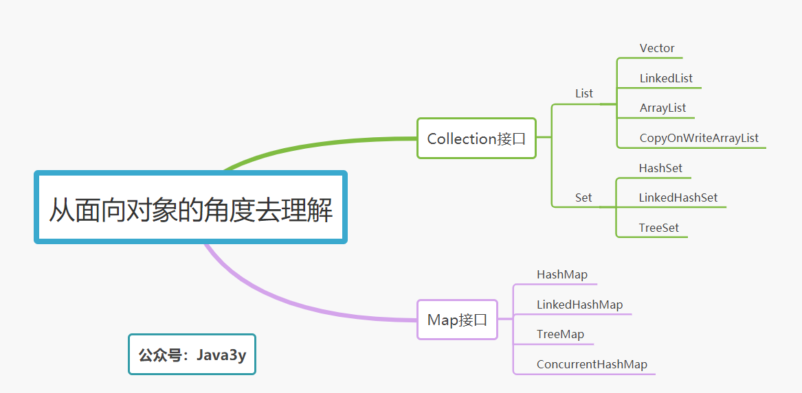

原文连接:https://www.cnblogs.com/Java3y/p/11988730.html
前言
只有光头才能变强。
文本已收录至我的GitHub精选文章，欢迎Star：https://github.com/ZhongFuCheng3y/3y
如果认识我的同学可能就知道，我已经写过很多系列级的文章了，但是没有一篇是写给刚入门的同学来看的，大多数都是依照我个人的学习进度来编写。
虽然可以按照我的文章顺序去一篇一篇阅读，但是如果是新入门的同学可能更希望得到的是一个学习指南（路线指引）。于是我就有了这篇文章，希望对刚入门的同学有所帮助。
如果这篇文章的反响不错，会持续更新其他的专题。觉得我写得不错，希望可以给我一个赞！
Java集合学习指南
本文会提出很多可能新手会想到的问题，但不会一一解答，只会往大方向去说明白。本文的内容偏向于指南，而非技术教程讲解。
如果想要得到具体的答案，可以翻阅我曾经写过的资料：https://github.com/ZhongFuCheng3y/3y，或者加入人才交流群跟众多开发者讨论，前面的Github链接有我的联系方式。
学习一项技术之前，必须知道为什么要学它！
Q: 我们得知道为什么要学习Java集合，学到Java集合的时候已经学过了数组了，为什么我不用数组反而用Java集合。数组和Java集合有什么区别？
A:Java是一门面向对象的语言，就免不了处理对象，为了方便操作多个对象，那么我们就得把这多个对象存储起来，想要存储多个对象(变量),很容易就能想到一个容器(集合)来装载
总的来说：就是Java给我们提供了工具方便我们去操作多个Java对象。
如何入门学习Java集合
Q: 从上面我们已经知道了为什么要学Java集合，下面我们就该知道Java集合的基本用法，以及从它整体的知识点去了解它是什么
A： 我们学习Java集合实际上就是为了方便操作多个对象，而Java给我们提供一系列的API(方法)供我们去操作。所以在初学Java集合的时候我们更多的是学习这些API(方法)分别是什么意思。
Q： 对Java集合的API使用有一定的了解之后，我们就应该从面向对象的角度去理解它。为什么会抽象出多个接口，以及每个接口的有什么特性。
A: 我们可以总结出几个常用的实现类，这几个常用的实现类我们必须要知道它的数据结构是什么，什么时候使用这个类。

需要学习和了解的数据结构：
到这里，我们简单了解各个实现类的数据结构以后，我们可能会简单记住下面的结论：
- 如果是集合类型，有List和Set供我们选择。List的特点是插入有序的，元素是可重复的。Set的特点是插入无序的，元素不可重复的。至于选择哪个实现类来作为我们的存储容器，我们就得看具体的应用场景。是希望可重复的就得用List，选择List下常见的子类。是希望不可重复，选择Set下常见的子类。
- 如果是
Key-Value型，那我们会选择Map。如果要保持插入顺序的，我们可以选择LinkedHashMap，如果不需要则选择HashMap，如果要排序则选择TreeMap。 - 总之：学完常见实现类的数据结构之后，你对它的使用场景就有一个清楚的认知了。
集合进阶与面试
如果我们在写代码的时候懂得选择什么样的集合作为我们的容器，那已经是入门了。但要知道的是，如果去面试之前，你懂的不应该只有这么少。
（如果还在初学或者零基础的同学我建议可以跳过这一部分，在网上有可能很多言论，比如：“如果你Java基础扎实的话，那你以后找工作就不愁了。在学Java基础的时候一定要把基础学好，看源码！”。但我认为，这一块是建立在有一定的编码/项目或者是去找工作的时候才成立的，一个刚入门学Java的，就不应该看源码，这很容易把自己劝退了）
我的观点是：如果刚入门学Java，首先你要十分清楚知道为什么要学这个，这个到底有什么用，用在哪些地方，以及熟悉常用的方法，就足够了。即便你花了两周左右时间去看源码实现了，可能看懂了。但是，你相信我，你大概率会忘掉。
Java集合是面试的重点，我在面试的时候几乎每家公司都会问集合的问题，从基础到源码，一步一步深入。Java集合面试的知识点就不限于基本的用法了。可能面试官会问你：
- HashMap的数据结构是什么？他是怎么扩容的？底层有没有用红黑树？取Key Hash值是JDK源码是怎么实现的？为什么要这样做？
- HashMap是线程安全的吗？什么是线程安全？有什么更好的解决方案？那线程安全的HashMap是怎么实现的？
- HashSet是如何判断Key是重复的？
- .....很多很多
如果想要得到具体的答案，可以翻阅我曾经写过的资料：https://github.com/ZhongFuCheng3y/3y，或者加入人才交流群跟众多开发者讨论，前面的文章链接有我的联系方式。
脑图的原图在GitHub上也有获取的方式
最后
总的来说，入门Java集合并不难，归根到底我认为就是三件事：
- 了解为什么要学习Java集合
- 学习Java集合的各个接口以及常用的实现类用法
- 学习常用实现类的数据结构是什么，能在写代码的时候选择一个合适的实现类装载自己的对象。
零基础入门不需要阅读源码，面试前一定要回顾和阅读源码（这是面试必考的知识点）！
本已收录至我的GitHub精选文章，欢迎Star：https://github.com/ZhongFuCheng3y/3y
乐于输出干货的Java技术公众号：Java3y。公众号内有300多篇原创技术文章、海量视频资源、精美脑图，关注即可获取！

非常感谢人才们能看到这里，如果这个文章写得还不错，觉得「三歪」我有点东西的话 求点赞 求关注️ 求分享👥 求留言💬 对暖男我来说真的 非常有用！！！
创作不易，各位的支持和认可，就是我创作的最大动力，我们下篇文章见！